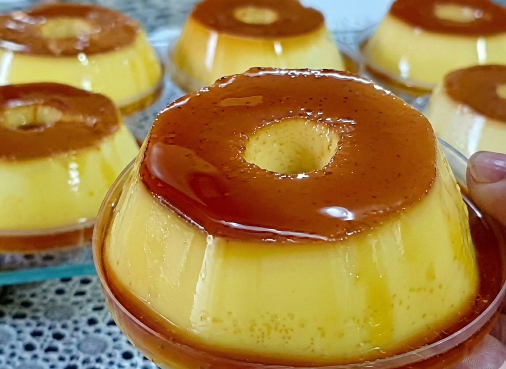

O Método Rainha do Pudim
Pudins perfeitos, deliciosos e lucrativos
sem forno e sem fogo!

De R$ 97,00 por apenas
R$ 19,90
Pudins perfeitos, deliciosos e lucrativos
sem forno e sem fogo!
De R$ 97,00 por apenas
R$ 19,90
"Fazer bolo dá trabalho, gasta luz e exige ingredientes caros. O pudim tradicional gasta 1h30 de gás. No Método Rainha do Pudim, nós cortamos o maior custo da sua planilha: o FORNO."
Custo de produção reduzido: Sem gasto com gás/energia de cozimento longo.
Escala: Você prepara 10 pudins no tempo que levaria para assar um.
Giro rápido: O pudim é a sobremesa favorita do Brasil. Vende todo dia.
Se você vender apenas 4 pudins por dia (um esforço mínimo), você já fatura mais de R$ 1.200,00 por mês. Imagine fazendo isso em escala.
Toque no botão e aprenda a lucrar de verdade.Eu criei um método para você pular a etapa do forno de uma vez por todas.

Você vai receber o Método Rainha do Pudim, com o passo a passo da receita base, as 3 variações mais vendidas e a minha planilha de precificação.
A técnica detalhada do pudim "zero forno" para não ter nenhum erro de execução.
O grande segredo infalível para a calda espessa, brilhante e que não gruda na forma.
Saiba exatamente quanto cobrar por cada fatia, valorizar seu trabalho e multiplicar seus ganhos.
Como valorizar ainda mais o seu produto, deixando atraente para vender e lucrar mais.
Eu quero que este seja o seu primeiro passo no empreendedorismo. É o preço de um lanche para você mudar a realidade financeira da sua cozinha e da sua família.
O acesso é 100% digital e imediato! Assim que o seu pagamento for aprovado, você receberá um e-mail com o link exclusivo para baixar o seu Guia. Você pode acessar e ler tudo direto pelo celular, tablet ou computador, a qualquer hora.
Com certeza! O Método foi desenhado exatamente para quem está começando do absoluto zero. É um passo a passo à prova de falhas. Se você sabe misturar ingredientes no liquidificador, você consegue fazer o pudim perfeito, com textura de seda, logo na sua primeira tentativa.
De jeito nenhum. O grande diferencial deste método é que você não precisa comprar batedeiras industriais ou fornos profissionais. Você vai usar apenas o liquidificador e a geladeira que já tem em casa. O seu único investimento será nos ingredientes da sua primeira receita, tornando este o negócio perfeito para começar com pouquíssimo dinheiro.
Pelo contrário. Você vai usar ingredientes de supermercado: leite condensado, creme de leite, leite e os agentes de estruturação que você encontra em qualquer mercadinho de bairro. Nada de produtos importados ou difíceis de comprar.
Com certeza! Essa é a beleza do método sem forno. Você pode bater os ingredientes à noite, em menos de 20 minutos, colocar nas forminhas e ir dormir. A geladeira faz o resto do trabalho pesado por você. No dia seguinte, eles já estão prontos para vender.
Sim! Você tem 7 dias de Garantia Incondicional. Se por qualquer motivo você achar que o Método Zero Forno não é para você, basta enviar um único e-mail para o nosso suporte dentro desse prazo e nós devolveremos 100% do seu dinheiro, sem perguntas e sem burocracia.